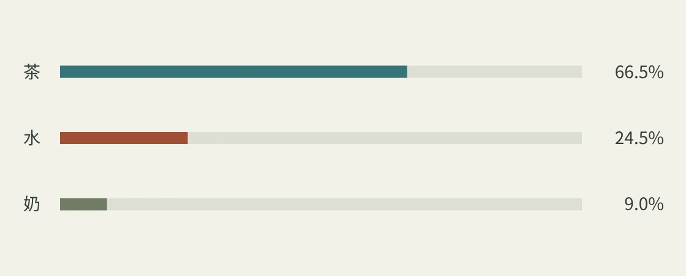

序言
输入“晚饭后，我想喝一杯”，模型接下来可以提出“茶”“水”，也可能是别的词。文本生成就是反复做这样的小决定：选出一个 token，接到原文后面，再计算下一步。即便模型参数完全固定，选择规则不同也会写出不同的句子。
一次预测给出一整列分数
token 是分词器使用的基本单位。它可能是词、字、词的一部分或字节片段。模型读入先前的 token，给词表里每个可接续项算一个原始分数，常称 logits。只比较“茶、水、奶”三个教学候选，假设这一步分数依次是 2、1、0。分数的绝对零点并不特殊，给三个数同加 10，之后的 softmax 概率仍一样。
温度为 1 时，将每个分数取指数得到约 7.39、2.72、1，再除以总和 11.11，三者的概率约为 66.5%、24.5%、9.0%。若每次都拿最高分，当前这一步永远选茶，这叫贪心选择。若按概率随机抽取，水和奶都有出现的机会。抽到水以后，下一步的输入已经变成“一杯水”，未来的分数由新的上下文重新计算。

温度控制分布的尖锐程度
温度 T 大于零时，先把各分数除以 T，再做 softmax。T = 0.5 会让原分数变成 4、2、0，茶的概率升到约 86.7%；T = 2 时变成 1、0.5、0，茶约占 50.6%。温度改变了候选之间的差距，三个候选的排序并没有改变。实际生成接口常把确定性选择作为单独模式，不宜把温度直接填 0 去做除法。
想亲手模拟一次抽样，可把 0 到 1 的区间按 0.665、0.245、0.090 切成三段。例如抽到均匀随机数 0.80，会落在水的那一段。固定这一组分数重复抽取 100 次，大约的比例应接近上述数字，但有限次抽样不会严格等于理论值。整句生成若还固定了随机种子及运行设置，则更容易重现用于比较的结果。
假设“一杯”后面三个候选词茶、水、奶的模型分数为 2、1、0。这里保留全部候选。

温度为 1 时，三个概率约为 66.5%、24.5% 和 9.0%。
top-k 和 top-p 保留哪些选择
top-k 会取分数最高的 k 个候选再归一化。上述温度 1 的例子若取 k = 2，茶与水之间重新分配全部概率，奶的概率变成零。top-p 会从最高概率往下累计，保留达到给定阈值所需的最小候选集合。取 p = 0.85 时，单独茶只有 0.665，加上水达到约 0.91，留下了两种。若下一个位置最高项本身就占 0.94，同一个阈值就可能只留下这一项。
这些操作改变的是模型可采样的选择，不能给答案增加外部事实依据。候选跨度过宽，低概率词会更常进入输出；范围过窄，又可能反复走进相同句式。比较配置时固定提示词、模型版本和长度限制，保留几次重复输出。还要记下温度和截断是在怎样的实现顺序中应用的，组合使用时最终保留的候选由该顺序决定。
截断后留下的是同一组词，重新分配的概率也要重新算。在上例中，保留茶和水后，茶约占 0.665/(0.665+0.245) = 0.731，水约占 0.269。假设仍用随机数 0.80，两种设置都能抽到水；换成 0.70，原分布落在水，新分布却落在茶。这使“只改了 top-k，为何同一种子仍改了输出”有了一个可以复算的具体原因。
输出在哪里结束
模型可以选到结束符，也可能因为达到生成上限、命中停止条件而停笔。限制新增 token 的数量与限制输入加输出的总长度含义不同。若一个接口返回的是包含原输入的整串 token，想提取续写，应先记录输入的 token 数，按 token 边界取出新增部分，再解码为文字。以输入字符串的汉字数量去截输出，遇到子词或特殊符号时很容易切错。
逐步最可能，和整句最可能
贪心选择只在当前一步比较。另设一个只有两步的例子：第一步甲、乙的概率为 0.6、0.4；选甲之后，第二步最佳词概率为 0.5；选乙之后，第二步最佳词概率为 0.9。完整序列的概率要沿着所走分支相乘，甲分支的最优序列得 0.30，乙分支则得 0.36。第一步先选甲，就已经放弃了此处概率最高的完整序列。
可以把这棵两层树的所有叶子列在纸上，分别运行贪心、保留两条前缀的搜索、以及按概率抽样。前两种在相同输入上通常给出确定结果，后者给多种前缀出现的机会。高概率只说明模型在这份条件输入下偏好哪些词，检验数字、引用或常识仍要检查生成内容本身。